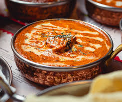

🌶️ Butter Chicken (Murgh Makhani)
Overview:
Butter Chicken is a rich, creamy, and mildly spiced North Indian curry made with marinated chicken cooked in a tomato-based sauce enriched with butter and cream.
Key Ingredients:
- Chicken (usually boneless, marinated in yogurt & spices)
- Tomatoes
- Butter & cream
- Ginger, garlic
- Garam masala, chili powder, kasuri methi (dried fenugreek)
Preparation Steps:
- Marinate chicken in yogurt, lemon juice, garlic, ginger, and spices for several hours.
- Grill or sauté the chicken until partially cooked.
- In a pan, prepare a sauce with butter, tomatoes, cream, and spices.
- Add the chicken to the sauce and simmer until fully cooked and flavorful.
Home